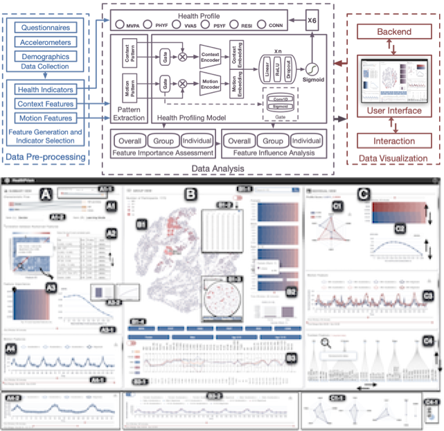
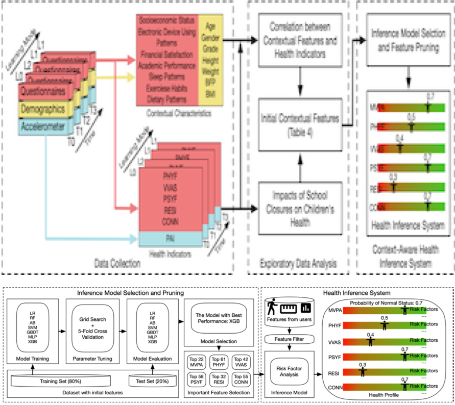
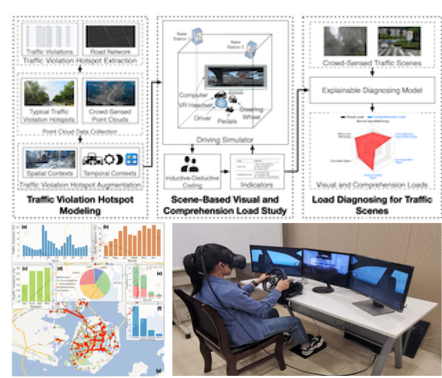
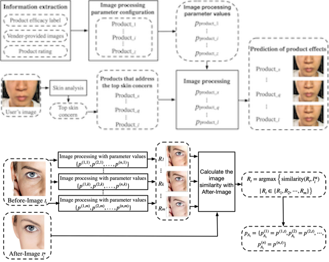
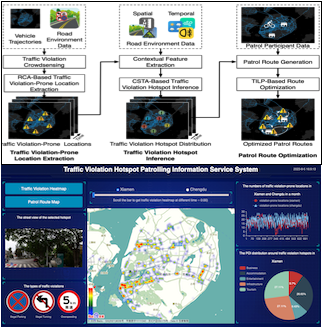

| [CHI'26a]
Zhihan Jiang, Qianhui Chen, Chu Zhang, Yanheng Li, RAY LC.
Hear You in Silence: Designing for Active Listening in Human Interaction with Conversational Agents Using Context-Aware Pacing.
(conditionally accepted) [website][arXiv] |
| [ACM HEALTH'26]
Zhihan Jiang*, Running Zhao*, Lin Lin, Yue Yu, Handi Chen, Xinchen Zhang, Xuhai Xu, Yifang Wang, Xiaojuan Ma, Edith CH Ngai.
DietGlance: Dietary Monitoring and Personalized Analysis at a Glance with Knowledge-Empowered AI Assistant.
(accepted) [arXiv] |
 | [CHI'26b]
Mengyuan Wu, Zhihan Jiang*, Yuang Fan*, Richard Feng, Sahiti Dharmavaram, Mathew Polowitz, Shawn Fallon, Bashima Islam, Lizbeth Benson, Irene Tung, David Creswell, Xuhai Xu.
MindfulAgents: Personalizing Mindfulness Meditation via an Expert-Aligned Multi-Agent System.
(conditionally accepted) |
 | [UIST'25]
Running Zhao*, Zhihan Jiang*, Xinchen Zhang, Chirui Chang, Handi Chen, Weipeng Deng, Luyao Jin, Xiaojuan Qi, Xun Qian, Edith CH Ngai.
NoteIt: A System Converting Instructional Videos to Interactable Notes Through Multimodal Video Understanding.
[website][demo][arXiv] |
 | [JAACAPOpen'24]
Zhihan Jiang*, Adrienne Y.L. Chan*, Dawn Lum, Kirstie HTY Wong, Janice CN Leung, Patrick Ip, David Coghill, Rosa S Wong, Edith C.H. Ngai, Ian C.K. Wong.
Wearable Signals for Diagnosing Attention-Deficit/Hyperactivity Disorder in Adolescents: A Feasibility Study.
[link] |
| [IoTJ'23]
Zhihan Jiang, Vera van Zoest, Weipeng Deng, Edith C.H. Ngai, Jiangchuan Liu.
Leveraging Machine Learning for Disease Diagnoses based on Wearable Devices: A Survey.
[link][pdf] |
|  | [VIS'23]
Zhihan Jiang, Handi Chen, Rui Zhou, Jing Deng, Xinchen Zhang, Running Zhao, Cong Xie, Yifang Wang, Edith C.H. Ngai.
HealthPrism: A Visual Analytics System for Exploring Children's Physical and Mental Health Profiles with Multimodal Data.
[arXiv][demo][link][appendix] |
|  | [UbiComp'23]
Zhihan Jiang, Lin Lin, Xinchen Zhang, Jianduo Luan, Running Zhao, Longbiao Chen, James Lam, Ka Man Yip, Hung Kwan So, Wilfred HS Wong, Patrick Ip, Edith C.H. Ngai.
A Data-Driven Context-Aware Health Inference System for Children during School Closures.
[link][pdf][presentation][poster] |
|  | [TITS'22]
Zhihan Jiang, Xin He, Chenhui Lu, Binbin Zhou, Xiaoliang Fan, Cheng Wang, Xiaojuan Ma, Edith C.H. Ngai, Longbiao Chen.
Understanding Drivers' Visual and Comprehension Loads in Traffic Violation Hotspots Leveraging Crowd-Based Driving Simulation.
[link][pdf] |
|  | [CHI'22]
Chuhan Shi, Zhihan Jiang, Xiaojuan Ma, Qiong Luo.
A Personalized Visual Aid for Selections of Appearance Building Products with Long-term Effects.
[link][pdf] |
|  | [TMC'21]
Zhihan Jiang, Hang Zhu, Binbin Zhou, Chenhui Lu, Mingfei Sun, Xiaojuan Ma, Xiaoliang Fan, Cheng Wang, Longbiao Chen.
CrowdPatrol: A Mobile Crowdsensing Framework for Traffic Violation Hotspot Patrolling.
[link][pdf][system][patrol routes] |
| [JNCA'21]
Longbiao Chen, Zhihan Jiang, Dingqi Yang, Thi-Mai-Trang Nguyen, Cheng Wang.
Fog Radio Access Network Optimization for 5G Leveraging User Mobility and Traffic Data.
[link][pdf] |
| [ISJ'20]
Zhihan Jiang, Longbiao Chen, Binbin Zhou, Jinchun Huang, Tianqi Xie, Xiaoliang Fan, Cheng Wang.
iTV: Inferring Traffic Violation-Prone Locations with Vehicle Trajectories and Road Environment.
[link][pdf][system] |
| [FCS'20]
Zhihan Jiang, Yan Liu, Xiaoliang Fan, Cheng Wang, Jonathan Li, Longbiao Chen.
Understanding Urban Structures and Crowd Dynamics Leveraging Large-Scale Vehicle Mobility Data.
[link][pdf][system] |

{kind=link}